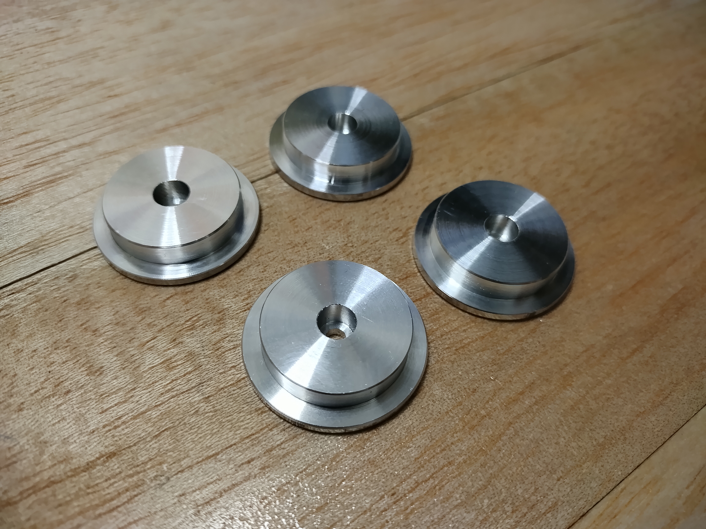
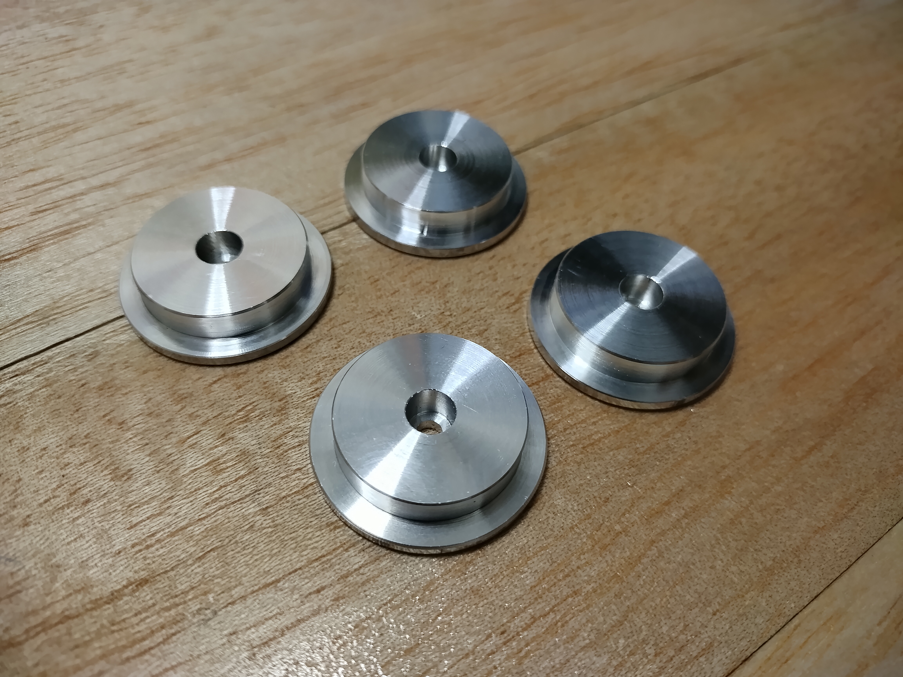
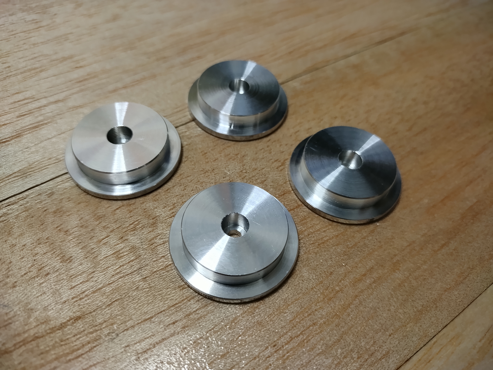

エネルギー機械コースの実習では旋盤やボール盤、 フライス盤などの工作機械を用いた金属加工をし、 文鎮や空気エンジンなどの様々な製品づくりに取り組んでいます‼
旋盤では様々な金属材料を バイトやドリル、 エンドミルで切削し空気エンジンのピストン、文鎮つまみ、回転軸などを製作・加工しています。実習で使用する汎用旋盤は デジタルメータや自動送り機能などがあり、大変使いやすく加工品の精度も抜群です。右下の写真にあるような車輪でも汎用旋盤を利用すれば寸法の誤差がほとんどない同じ形状の製品をいく つも加工することができます。

実習で使用する切削工具
ボール盤 では主にドリルを使用し、ネジや回転軸を通す穴、雌ネジ の下穴などを開けています。 実習設備には卓上ボール盤と直立ボール盤の二つがあり、開ける穴の大きさによってそれぞれを使い分けています。穴を開ける前には必ずハイトゲージでけがきをし、 センターポンチでポンチ穴を打っています。 ボール盤を活用することで下右の写真のようにアルミニウム合金の材料に穴を開け、ステキなオブジェを製作することも可能です。
実習で使用する切削工具
ドリル など
材料に溝を掘る、より精度の高い位置にエンドミルで穴を開けたいといった際にはフライス盤を使います。実習で使用する フライス盤にもデジタルメータや自動送りなど機能がありサイズもかなり大きいです。台数が限られているため基本的には 一人ずつ使用しています。プログラムによって動作するNCフライス盤を使用すれば下右の写真のような複雑な形の加工をすることも可能です。
実習で使用する切削工具
エンドミル など
エネルギー機械コースでは材料力学や熱力学をはじめ、様々な専門科目を学修することで プラントや生産工場の機械の設計、飛行機や船の整備などに繋がる知識を深めることが可能です。